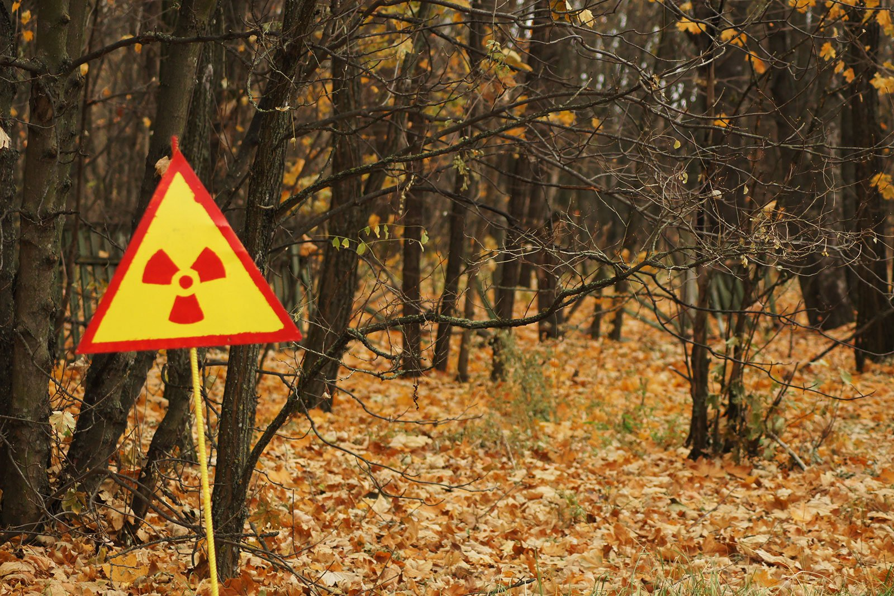

Самой опасной зоной в Чернобыле является зона с названием "Рыжий лес"

Рыжий лес (укр. Рудий ліс), иногда Ржавый лес, Красный лес — около 202 км² деревьев, прилегающих к Чернобыльской АЭС, принявших на себя наибольшую долю выброса радиоактивной пыли во время взрыва реактора в 1986 году.
Высокая доза поглощённой радиации привела к гибели деревьев (преимущественно сосен) и окрашиванию их в буро-красный цвет, которое произошло в течение 30 минут после взрыва. Кроме того, по ночам наблюдалось свечение[источник не указан 779 дней] погибших деревьев (это было вызвано взаимодействием ферментов дерева с радиоактивными частицами).
Во время работ по дезактивации территории лес был снесён бульдозерами и захоронен.
В настоящее время лес на этой территории восстанавливается естественным путём. Нужно отметить, что основные радиационные нагрузки на сосну в результате аварии на ЧАЭС пришлись на период активизации процессов роста растений.
В такой период радиочувствительность растений увеличивается в 1,5—3 раза по сравнению с другими периодами. Крона сосен достаточно плотная и является эффективным фильтром, что способствовало задержке значительного количества радиоактивной пыли и аэрозолей в кронах этих деревьев.
Сосна не сбрасывает хвою на протяжении 2—3 лет, что обуславливает медленную естественную очистку крон по сравнению с деревьями лиственных пород. Этот фактор усилил радиационное поражение хвойных по сравнению с другими породами.